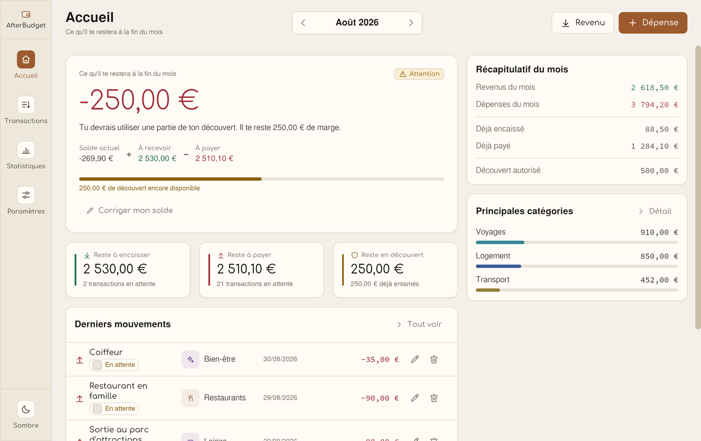
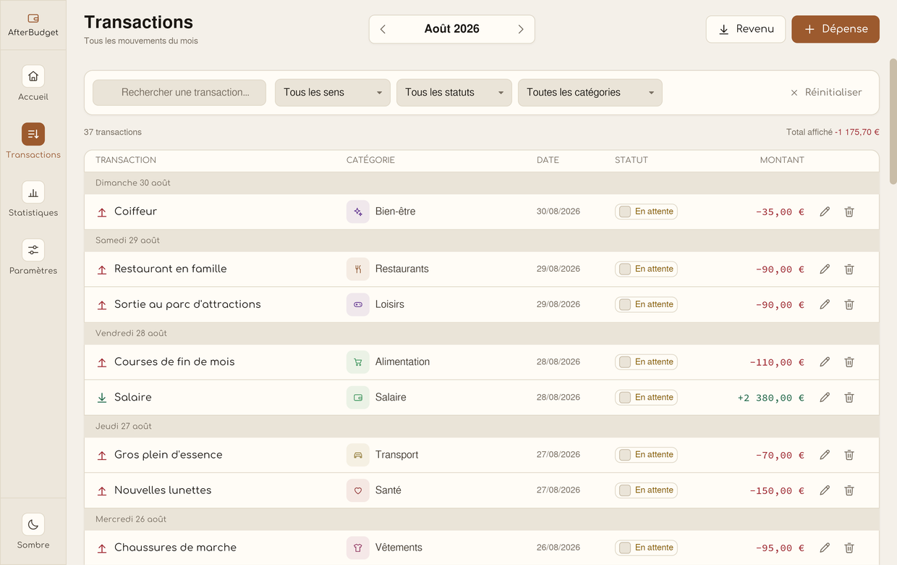
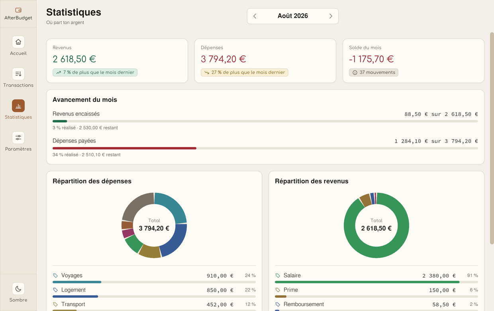
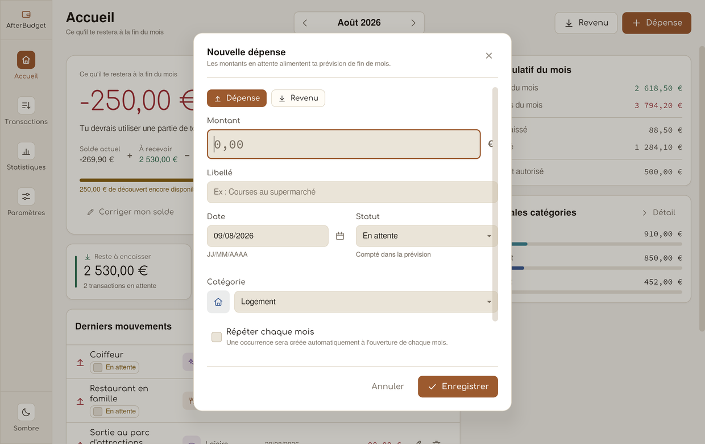
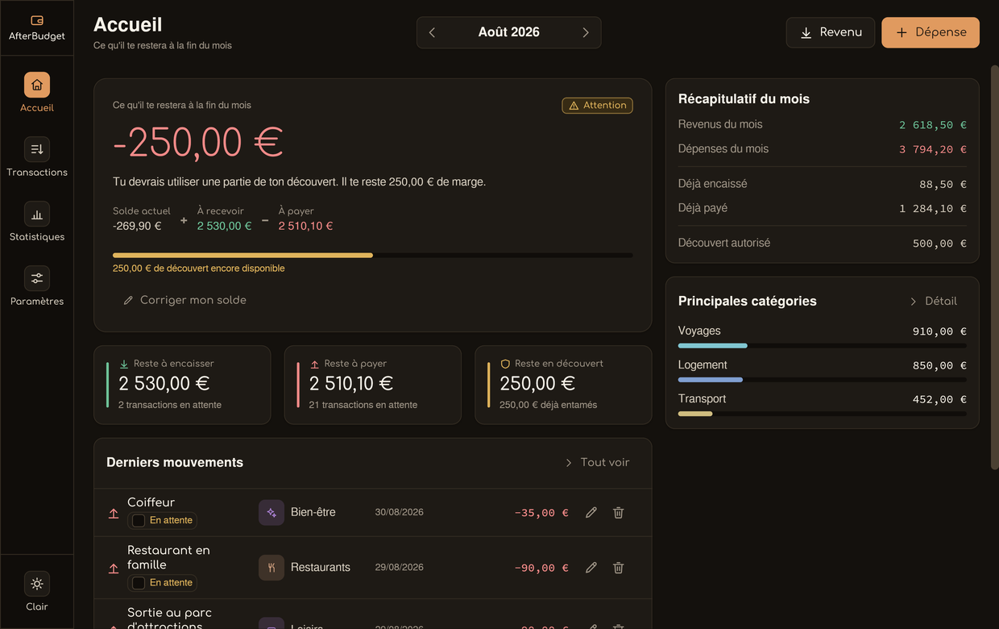

Solde prévisionnel
Le solde actuel, les revenus attendus et les dépenses prévues sont réunis au même endroit. Un statut te signale simplement quand il faut regarder de plus près.
Gestion de budget personnel · 100 % local
Tu saisis ce qui est déjà sur ton compte et ce qui doit encore arriver. AfterBudget te montre aussitôt le montant réellement disponible à la fin du mois. Tes données restent sur ton ordinateur.

Une opération ajoutée, réglée ou supprimée modifie immédiatement le résultat. Pas besoin d'attendre la fin du mois pour voir venir le problème.
Un écran d'accueil lisible, des opérations détaillées et les bons repères pour savoir où tu en es sans passer ta soirée dans un tableur.
Le solde actuel, les revenus attendus et les dépenses prévues sont réunis au même endroit. Un statut te signale simplement quand il faut regarder de plus près.
Pour le loyer, le salaire ou un abonnement, tu définis une règle. L'opération est ajoutée au début du mois et reste modifiable.
Les catégories et les statuts rendent la liste facile à relire. Une opération est clairement indiquée comme réalisée ou en attente.
Compare le mois en cours au précédent, regarde ce qui est déjà payé et retrouve les postes qui pèsent le plus dans ton budget.
Indique le découvert que ta banque autorise. L'application affiche la marge restante et te prévient si tu risques de la dépasser.
Pas de compte et pas de serveur. La base reste dans un fichier sur ta machine, que tu peux sauvegarder ou déplacer.
Ces écrans viennent directement de l'application native et montrent les principaux usages du quotidien.
Le solde prévisionnel est la seule donnée hors échelle de l'écran. En dessous, ce qui reste à encaisser et à payer, la jauge de découvert, les derniers mouvements et le récapitulatif du mois.
Le statut s'affiche avec son libellé et son icône : ici « Attention », avec la marge de découvert encore disponible.
Une table claire, groupée par jour et pensée pour parcourir rapidement tes opérations. Les filtres isolent en un instant les revenus, les dépenses, les statuts ou les catégories.
Le total affiché se met à jour avec la sélection. Chaque ligne donne le libellé, la catégorie, la date, le statut et le montant.

Le mois est comparé au précédent, avec l'avancement des revenus et des dépenses. Les graphiques sont accompagnés de leurs montants et de leur légende.

Solde, découvert, devise, apparence et opérations récurrentes sont regroupés au même endroit. Tu peux aussi exporter ou importer ta base.
Le formulaire reste lisible et va droit au but : montant, libellé, date, statut et catégorie. Chaque champ est contrôlé avant l'enregistrement.

Le même aperçu, avec une interface sombre plus confortable le soir. Le solde prévu, les mouvements et les catégories restent immédiatement lisibles.

Pas de compte, pas de publicité et pas de synchronisation imposée. Le fichier de données reste chez toi.
AfterBudget est une application native écrite en Rust. Elle fonctionne localement, sans page web ouverte en permanence.
Contrastes validés WCAG AA, libellés explicites et informations toujours accompagnées d'un texte : jamais la couleur seule pour porter un sens.
La base SQLite peut être exportée et importée pour faire une sauvegarde ou changer d'ordinateur.
Choisis ton système et télécharge la dernière version publiée. Le code source et les versions sont disponibles sur GitHub.
Pour Windows 10 et 11.
Télécharger pour Windowsafterbudget-windows-latest.exe
Une version pour les Mac Apple Silicon et Intel.
Télécharger pour macOSafterbudget-macos-latest.dmg · universel
Choisis le format adapté à ta distribution.
.deb · .AppImage · .rpm
L'application est gratuite et open source (licence MIT). Le code source est sur GitHub.